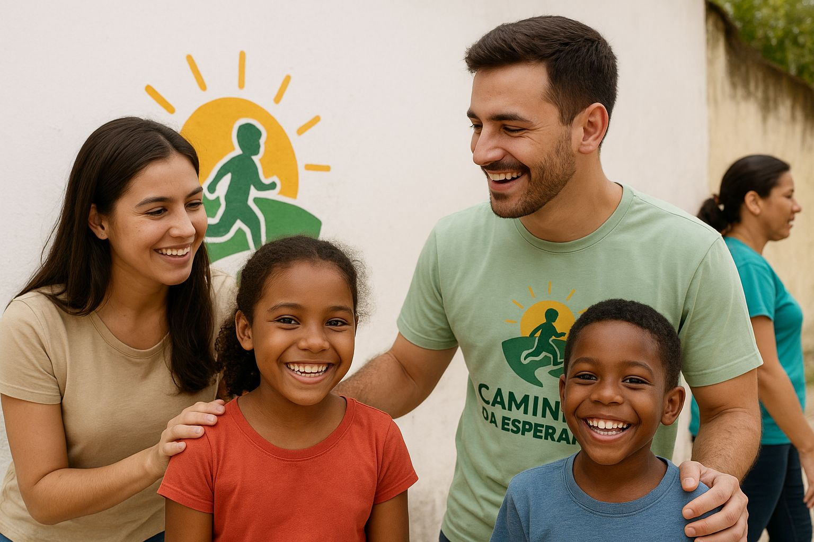

Sobre nós
A Caminhos da Esperança nasceu em 2012, a partir da iniciativa de um grupo de voluntários que acreditava no poder da educação e do acolhimento para transformar vidas. A ideia surgiu quando uma professora, ao perceber a quantidade de crianças e adolescentes em situação de vulnerabilidade em sua comunidade, decidiu unir amigos e profissionais de diferentes áreas para oferecer apoio social, educacional e emocional. Desde então, a ONG tem atuado com o objetivo de proporcionar oportunidades de desenvolvimento pessoal e profissional, por meio de projetos de reforço escolar, oficinas de arte e cultura, esportes e acompanhamento psicológico. Além disso, promove campanhas de arrecadação de alimentos, roupas e materiais escolares, fortalecendo o vínculo comunitário e o sentimento de solidariedade. Ao longo dos anos, a Caminhos da Esperança se tornou referência local, ajudando centenas de jovens a sonhar com um futuro melhor — e, principalmente, a trilhar seus próprios caminhos com dignidade, esperança e confiança no amanhã.